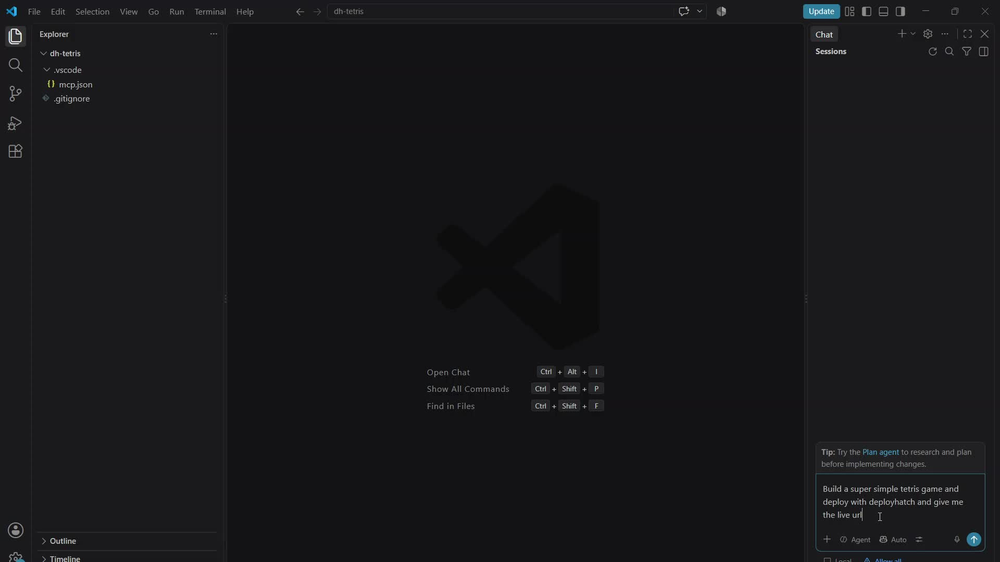

Production infrastructure
for coding agents.
A controlled path from GitHub to production — without unrestricted infrastructure access.
We’re building the boundary that lets it ship.
AI can build software.
Production is still a human handoff.
Agent writes the code.
Developers increasingly use coding agents to create and modify real applications.
The human takes over.
Deployment, debugging, recovery, secrets and verification still demand explicit judgment.
Writing code is becoming autonomous faster than operating it.
A deploy button cannot
decide what happens next.
01 What failed — code, configuration or infrastructure?
02 What is the agent authorized to change?
03 When must it stop and ask a human?
04 Did this exact deployment become healthy?
Give agents bounded
production authority.
A production control layer built on a functioning deployment platform.
Project-scoped access. Explicit recovery limits. Human-stop boundaries.
A controlled loop.
With a clear place to stop.
Read authorized project and live capabilities.
Run an exact Git revision; observe state.
Classify failure and permitted next action.
Act only within the granted authority.
Confirm the exact deployment is healthy.
Source failures return to the coding agent for a repository fix. Configuration and platform recovery require authorization.
AI agent → live Tetris.

Repository.
Agent workflow.
Public application.
The agent discovers its project, deploys, follows deployment state and returns the live URL.
Watch on Deploy Hatch ↗First-party test, not a customer case study.
The software engineer
is changing.
Human writes.
Human operates.
AI increasingly writes.
Human still operates.
AI builds.
Controlled agents operate.
Our thesis: agent-driven software needs an explicit production control boundary.
Work underneath the
tools developers choose.
Integrated app buildersAI → application environment → hosting
Traditional platformDeveloper → deployment platform → production
Deploy HatchCoding agent → controlled boundary → production
Keep the coding agent. Keep normal source code and GitHub.
Differentiate through authority, diagnosis, bounded recovery and verification.
Architectural framing; categories overlap as products evolve. Not an exclusive feature comparison.
Working infrastructure.
An early agent thesis.
The platform exists.
- GitHub → running applications and persistent workloads
- Production runtime and agent/MCP interface
- End-to-end first-party agent deployment proof
- Underlying platform users and organic acquisition
5 design partners.
Target: developers and founders already shipping with coding agents.
- Repeated external deployments
- Recovery and escalation behavior
- Trust and willingness to pay
A production boundary
for agent-built software.
Agent-heavy builders.
Individual developers and AI-first startups who still take over manually at production.
Expansion thesisTeams, persistent AI workloads and agent platforms needing controlled production access.
Recurring runtime
and software revenue.
Deployment/runtime usage plus higher-value agent-operation capabilities.
Free beta today. Pricing and willingness to pay remain to be validated.
More agent-built software could create more demand for controlled production access.
Built by an operator.
Validated with real developers next.
Built and operated
the full stack.
Deployment platform, runtime infrastructure, GitHub workflow, reliability systems and agent interface.
The control-boundary thesis grew from the founder’s own use of AI in production-sensitive engineering.
NowWorking infrastructure and first-party agent deployment proof.
NextFive design partners → repeat usage → validated recovery → paying customers.
ThenExpand across agents, workloads, teams and infrastructure.
AI can build the software.
Help us validate the
production boundary.
Pre-seed capital would accelerate product development, reliability and design-partner acquisition.
External repeat usage and paying agent-native customers.
[FOUNDER: INSERT NAME & CONTACT]
[FOUNDER: CONFIRM ROUND TARGET]